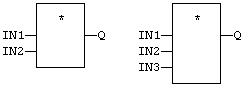
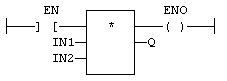

Operator
Performs a multiplication of all inputs.
|
Name |
Type |
Description |
|
IN1 |
ANY_NUM |
First input. |
|
IN2 |
ANY_NUM |
Second input |
.
|
Name |
Type |
Description |
|
Q |
ANY_NUM |
Result: IN1 * IN2. |
All inputs and the output must have the same type. In FBD language, the block may have up to 16 inputs. In LD language, the input rung (EN) enables the operation, and the output rung keeps the same value as the input rung. In IL language, the MUL instruction performs a multiplication between the current result and the operand. The current result and the operand must have the same type.
Q := IN1 * IN2;
The block may have up to 16 inputs:

The multiplication is executed only if EN is
TRUE.
ENO is equal to EN.
